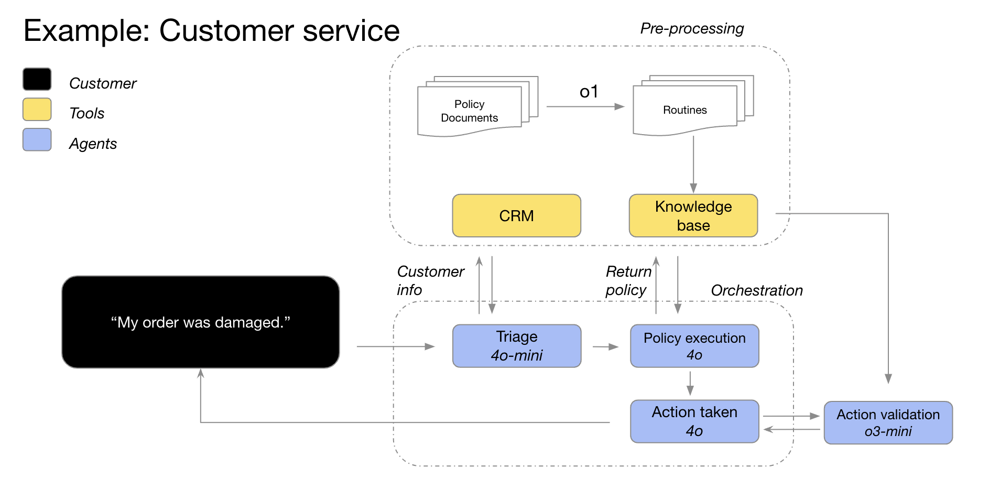
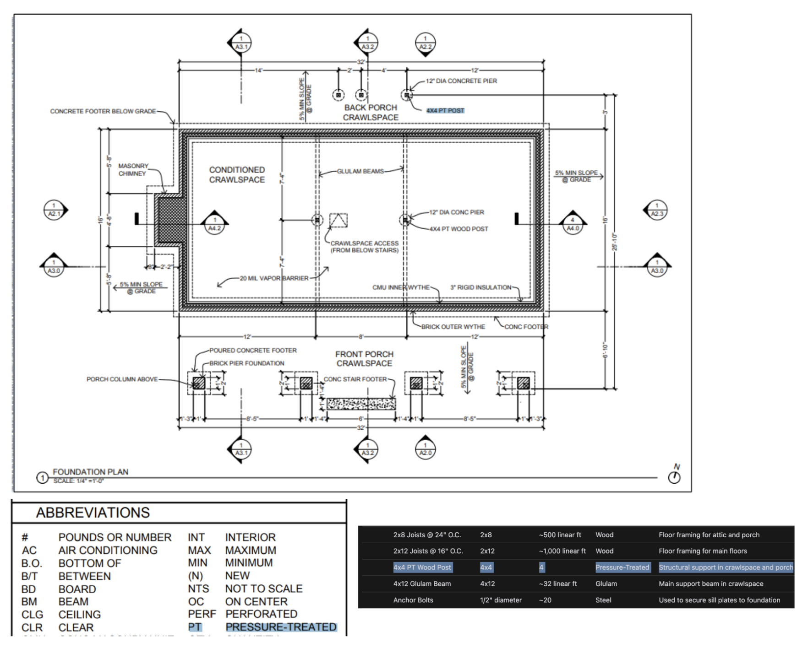

Reasoning Best Practices#
Learn when to use reasoning models and how they compare to GPT models.
OpenAI offers two types of models: reasoning models (o3 and o4-mini, for example) and GPT models (like GPT-4.1). These model families behave differently.
This guide covers:
The difference between our reasoning and non-reasoning GPT models
When to use our reasoning models
How to prompt reasoning models effectively
Read more about reasoning models and how they work.
Reasoning models vs. GPT models#
Compared to GPT models, our o-series models excel at different tasks and require different prompts. One model family isn’t better than the other—they’re just different.
We trained our o-series models (“the planners”) to think longer and harder about complex tasks, making them effective at strategizing, planning solutions to complex problems, and making decisions based on large volumes of ambiguous information. These models can also execute tasks with high accuracy and precision, making them ideal for domains that would otherwise require a human expert—like math, science, engineering, financial services, and legal services.
On the other hand, our lower-latency, more cost-efficient GPT models (“the workhorses”) are designed for straightforward execution. An application might use o-series models to plan out the strategy to solve a problem, and use GPT models to execute specific tasks, particularly when speed and cost are more important than perfect accuracy.
How to choose#
What’s most important for your use case?
Speed and cost → GPT models are faster and tend to cost less
Executing well defined tasks → GPT models handle explicitly defined tasks well
Accuracy and reliability → o-series models are reliable decision makers
Complex problem-solving → o-series models work through ambiguity and complexity
If speed and cost are the most important factors when completing your tasks and your use case is made up of straightforward, well defined tasks, then our GPT models are the best fit for you. However, if accuracy and reliability are the most important factors and you have a very complex, multistep problem to solve, our o-series models are likely right for you.
Most AI workflows will use a combination of both models—o-series for agentic planning and decision-making, GPT series for task execution.

GPT models pair well with o-series models
Our GPT-4o and GPT-4o mini models triage order details with customer information, identify the order issues and the return policy, and then feed all of these data points into o3-mini to make the final decision about the viability of the return based on policy.
When to use our reasoning models#
Here are a few patterns of successful usage that we’ve observed from customers and internally at OpenAI. This isn’t a comprehensive review of all possible use cases but, rather, some practical guidance for testing our o-series models.
Ready to use a reasoning model? Skip to the quickstart →
2. Finding a needle in a haystack#
When you’re passing large amounts of unstructured information, reasoning models are great at understanding and pulling out only the most relevant information to answer a question.
“To analyze a company’s acquisition, o1 reviewed dozens of company documents—like contracts and leases—to find any tricky conditions that might affect the deal. The model was tasked with flagging key terms and in doing so, identified a crucial “change of control” provision in the footnotes: if the company was sold, it would have to pay off a $75 million loan immediately. o1’s extreme attention to detail enables our AI agents to support finance professionals by identifying mission-critical information.”
—Endex, AI financial intelligence platform
3. Finding relationships and nuance across a large dataset#
We’ve found that reasoning models are particularly good at reasoning over complex documents that have hundreds of pages of dense, unstructured information—things like legal contracts, financial statements, and insurance claims. The models are particularly strong at drawing parallels between documents and making decisions based on unspoken truths represented in the data.
“Tax research requires synthesizing multiple documents to produce a final, cogent answer. We swapped GPT-4o for o1 and found that o1 was much better at reasoning over the interplay between documents to reach logical conclusions that were not evident in any one single document. As a result, we saw a 4x improvement in end-to-end performance by switching to o1—incredible.”
—Blue J, AI platform for tax research
Reasoning models are also skilled at reasoning over nuanced policies and rules, and applying them to the task at hand in order to reach a reasonable conclusion.
“In financial analyses, analysts often tackle complex scenarios around shareholder equity and need to understand the relevant legal intricacies. We tested about 10 models from different providers with a challenging but common question: how does a fundraise affect existing shareholders, especially when they exercise their anti-dilution privileges? This required reasoning through pre- and post-money valuations and dealing with circular dilution loops—something top financial analysts would spend 20-30 minutes to figure out. We found that o1 and o3-mini can do this flawlessly! The models even produced a clear calculation table showing the impact on a $100k shareholder.”
–BlueFlame AI, AI platform for investment management
4. Multistep agentic planning#
Reasoning models are critical to agentic planning and strategy development. We’ve seen success when a reasoning model is used as “the planner,” producing a detailed, multistep solution to a problem and then selecting and assigning the right GPT model (“the doer”) for each step, based on whether high intelligence or low latency is most important.
“We use o1 as the planner in our agent infrastructure, letting it orchestrate other models in the workflow to complete a multistep task. We find o1 is really good at selecting data types and breaking down big questions into smaller chunks, enabling other models to focus on execution.”
—Argon AI, AI knowledge platform for the pharmaceutical industry
“o1 powers many of our agentic workflows at Lindy, our AI assistant for work. The model uses function calling to pull information from your calendar or email and then can automatically help you schedule meetings, send emails, and manage other parts of your day-to-day tasks. We switched all of our agentic steps that used to cause issues to o1 and observing our agents becoming basically flawless overnight!”
—Lindy.AI, AI assistant for work
5. Visual reasoning#
As of today, o1 is the only reasoning model that supports vision capabilities. What sets it apart from GPT-4o is that o1 can grasp even the most challenging visuals, like charts and tables with ambiguous structure or photos with poor image quality.
“We automate risk and compliance reviews for millions of products online, including luxury jewelry dupes, endangered species, and controlled substances. GPT-4o reached 50% accuracy on our hardest image classification tasks. o1 achieved an impressive 88% accuracy without any modifications to our pipeline.”
—SafetyKit, AI-powered risk and compliance platform
From our own internal testing, we’ve seen that o1 can identify fixtures and materials from highly detailed architectural drawings to generate a comprehensive bill of materials. One of the most surprising things we observed was that o1 can draw parallels across different images by taking a legend on one page of the architectural drawings and correctly applying it across another page without explicit instructions. Below you can see that, for the 4x4 PT wood posts, o1 recognized that “PT” stands for pressure treated based on the legend.

6. Reviewing, debugging, and improving code quality#
Reasoning models are particularly effective at reviewing and improving large amounts of code, often running code reviews in the background given the models’ higher latency.
“We deliver automated AI Code Reviews on platforms like GitHub and GitLab. While code review process is not inherently latency-sensitive, it does require understanding the code diffs across multiple files. This is where o1 really shines—it’s able to reliably detect minor changes to a codebase that could be missed by a human reviewer. We were able to increase product conversion rates by 3x after switching to o-series models.”
—CodeRabbit, AI code review startup
While GPT-4o and GPT-4o mini may be better designed for writing code with their lower latency, we’ve also seen o3-mini spike on code production for use cases that are slightly less latency-sensitive.
“o3-mini consistently produces high-quality, conclusive code, and very frequently arrives at the correct solution when the problem is well-defined, even for very challenging coding tasks. While other models may only be useful for small-scale, quick code iterations, o3-mini excels at planning and executing complex software design systems.”
—Windsurf, collaborative agentic AI-powered IDE, built by Codeium
7. Evaluation and benchmarking for other model responses#
We’ve also seen reasoning models do well in benchmarking and evaluating other model responses. Data validation is important for ensuring dataset quality and reliability, especially in sensitive fields like healthcare. Traditional validation methods use predefined rules and patterns, but advanced models like o1 and o3-mini can understand context and reason about data for a more flexible and intelligent approach to validation.
“Many customers use LLM-as-a-judge as part of their eval process in Braintrust. For example, a healthcare company might summarize patient questions using a workhorse model like gpt-4o, then assess the summary quality with o1. One Braintrust customer saw the F1 score of a judge go from 0.12 with 4o to 0.74 with o1! In these use cases, they’ve found o1’s reasoning to be a game-changer in finding nuanced differences in completions, for the hardest and most complex grading tasks.”
—Braintrust, AI evals platform
How to prompt reasoning models effectively#
These models perform best with straightforward prompts. Some prompt engineering techniques, like instructing the model to “think step by step,” may not enhance performance (and can sometimes hinder it). See best practices below.
Developer messages are the new system messages: Starting with
o1-2024-12-17, reasoning models support developer messages rather than system messages, to align with the chain of command behavior described in the model spec.Keep prompts simple and direct: The models excel at understanding and responding to brief, clear instructions.
Avoid chain-of-thought prompts: Since these models perform reasoning internally, prompting them to “think step by step” or “explain your reasoning” is unnecessary.
Use delimiters for clarity: Use delimiters like markdown, XML tags, and section titles to clearly indicate distinct parts of the input, helping the model interpret different sections appropriately.
Try zero shot first, then few shot if needed: Reasoning models often don’t need few-shot examples to produce good results, so try to write prompts without examples first. If you have more complex requirements for your desired output, it may help to include a few examples of inputs and desired outputs in your prompt. Just ensure that the examples align very closely with your prompt instructions, as discrepancies between the two may produce poor results.
Provide specific guidelines: If there are ways you explicitly want to constrain the model’s response (like “propose a solution with a budget under $500”), explicitly outline those constraints in the prompt.
Be very specific about your end goal: In your instructions, try to give very specific parameters for a successful response, and encourage the model to keep reasoning and iterating until it matches your success criteria.
Markdown formatting: Starting with
o1-2024-12-17, reasoning models in the API will avoid generating responses with markdown formatting. To signal to the model when you do want markdown formatting in the response, include the stringFormatting re-enabledon the first line of your developer message.
How to keep costs low and accuracy high#
With the introduction of o3 and o4-mini models, persisted reasoning items in the Responses API are treated differently. Previously (for o1, o3-mini, o1-mini and o1-preview), reasoning items were always ignored in follow‑up API requests, even if they were included in the input items of the requests. With o3 and o4-mini, some reasoning items adjacent to function calls are included in the model’s context to help improve model performance while using the least amount of reasoning tokens.
For the best results with this change, we recommend using the Responses APIwith the store parameter set to true, and passing in all reasoning items from previous requests (either using previous_response_id, or by taking all the output items from an older request and passing them in as input items for a new one). OpenAI will automatically include any relevant reasoning items in the model’s context and ignore any irrelevant ones. In more advanced use‑cases where you’d like to manage what goes into the model’s context more precisely, we recommend that you at least include all reasoning items between the latest function call and the previous user message. Doing this will ensure that the model doesn’t have to restart its reasoning when you respond to a function call, resulting in better function‑calling performance and lower overall token usage.
If you’re using the Chat Completions API, reasoning items are never included in the context of the model. This is because Chat Completions is a stateless API. This will result in slightly degraded model performance and greater reasoning token usage in complex agentic cases involving many function calls. In instances where complex multiple function calling is not involved, there should be no degradation in performance regardless of the API being used.